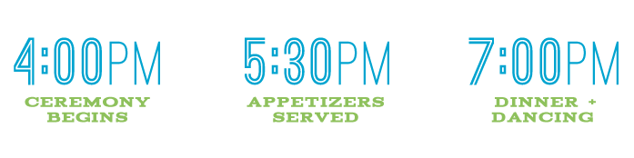
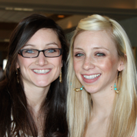
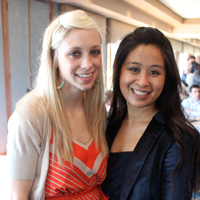
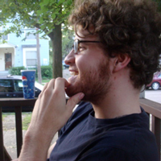

Our Story
Three things brought the story of Courtney and Scott together… a love of dance, the University of Michigan and computers. In May 2008, the two met after Courtney had just started her new summer job at the U of M computer showcase. Scott was asked to give Courtney an orientation of the store and, before the two knew it, they were hooked. After spending a leisurely summer in Ann Arbor, the best kind of summer, Scott had a big decision to make… whether to move to NYC to start his career, or stay in Michigan with Courtney, who was starting graduate school at Wayne State University in the fall. Well, I think we all know which one he chose. And, after three years of living in tiny apartments, attending break dancing battles, going on study dates and buying a brand new house, the two have decided to tie the knot!
The Big Day
Ceremony
The ceremony is taking place at the First Baptist Church of Ann Arbor. The church was built in 1879 and is one of the many historical icons of the city. We really wanted a traditional ceremony and what better place to get married then in Ann Arbor!
http://www.fbca2.org/about/
Reception
The reception will be held at Waldenwoods Resort & Conference Center in Hartland, MI. Waldenwoods was originally built in 1837 and sits on a 140-acre lake. We fell in love with the rustic and outdoorsy feel of this venue and feel it’s the perfect place to eat, drink and dance the night away.
Walden Woods
Dinner Menu
Appetizers:
Spinach Artichoke Dip with Toasted Baguettes
Sesame Chicken Tenders with Oriental Dipping sauce
Antipasto Skewers
Mixed Fruit Tray
Salad:
Michigan Salad with Pine Nuts & Dried Cherries
Crisp field greens with pine nuts, dried cherries, and raspberry vinaigrette.
Main Entree's:
Chef's Own Cromain Chicken
Seasoned all-natural grilled chicken topped with roasted red peppers, smoked Gouda, bacon and spicy mustard sauce.
Parmesan Crusted Whitefish
Parmesan encrusted Whitefish baked to tender perfection.
Vegetarian
Chef's choice.
Wedding Party
Matron of Honor: Caitlin Delaney
Although often mistaken for the bride’s older sister, she is, in fact, two years younger than Courtney. Caitlin has always been one of Courtney’s biggest supporters throughout her life and, while the two are very opposite in personality, they always make for a great team!
Bridesmaids:
Shelley Catalan
Fellow drama enthusiast & college roommate
Kristen Young
Fellow Basement twirler & cousin of the bride
Ashley Schopieray
Fellow Rockette & childhood friend
Best Man: Ross Tolinski:
Growing up with Ross, Scott was afforded the luxury of always having a counterpart in everything. From basement hockey games to Super Nintendo, Ross and Scott always found activities to share.
Groomsmen:
Devin Kerr
Fellow bandmate & and college roommate
John Zhu
Fellow Robotops bboy crew founder
Tim Golden
Fellow Kangol enthusiast & bandmate
Details
Hotel Accommodations:
If you are coming from out of town and need a place to stay, a block of rooms has been reserved at the Holiday Inn Express & Suites of Brighton. Rates range from $83 (Standard Room), $93 (Mini Suite), and $103 (Full Suite). Please book by July 17th, 2012 at www.hiexpress.com/brightonmi and use the group code TOG. You can also book by phone at (810) 225-4300. A complementary shuttle will be provided for guests for transportation to and from the hotel and Waldenwoods.
Registry:
Courtney and Scott are registered at Bed, Bath & Beyond and Crate & Barrel.
Things to do in Ann Arbor:
Check out Visit Ann Arbor for great ideas on where to eat & what to do in Ann Arbor.
Directions:
The First Baptist Church of Ann Arbor is located at
517 East Washington Street, Ann Arbor, MI.
Parking is located at the church entrance on Washington Street or directly accross Washington at the S-Washington Parking Structure.